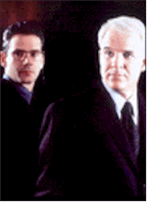
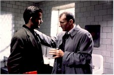
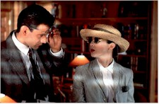

Contents | Features | Reviews | Books | Archives | Store |
 |
|
| Movie Credits | Buy It! |
The Spanish Prisoner
Review by Eddie Cockrell
Posted 24 April 1998
|  | Written and Directed by David Mamet Starring
Ben Gazzara, Felicity Huffman, |
"We have no idea who anyone is," someone says near the beginning of this sublime shellgame from playwright and scenarist David Mamet, returning to the director's chair after a handful of journeyman screenwriting assignments (Vanya on 42nd Street, The Edge, Wag the Dog). And, like clockwork, that sentiment is taken to it's logical and harrowing extreme: as in the intricate, delicate moral universes charted in his previous directorial efforts — House of Games, Things Change, Homicide and Oleanna — the world of The Spanish Prisoner (the title refers to a complicated confidence scheme, not a period swashbuckler rescue yarn) is a land fraught with equal parts betrayal and benevolence, risk and redemption.
At the fictional Caribbean resort to which he's been summoned by his boss, Mr. Klein (Ben Gazzara), finicky corporate whiz-kid Joe Ross (Campbell Scott) scrawls some numbers representing heady profits from an unseen formula he's dubbed "The Process" on a blackboard before a group of executives at first skeptical, then awed by the moneymaking potential of what they've seen. Before flying back to the mainland, Ross banters awkwardly with his secretary Susan Ricci (Rebecca Pidgeon), who's perky to the point of annoyance, and his colleague George (Ricky Jay), with whom he seems to be genuinely comfortable. Only one event seems odd: while posing self-consciously for photographs on the beach, he meets the mysterious Jimmy Dell (Steve Martin), who is at first rude but then contrite, offering not only to take Joe to dinner back in New York but fix him up with his sister as well.
Once back in the city things begin to get tense, as Joe suspects Mr. Klein of ducking his commitment to compensate him properly for "The Process" and simultaneously begins an increasingly contentious friendship with the apparently rich Jimmy that is full of false starts and miscommunication. Magnanimous enough to open Joe a Swiss bank account and enroll him in his exclusive club, he is also petty and inscrutable. Yet when things become strained at the office, it is the mercurial Dell that would appear to offer Joe the best chance to protect his interests. George and Susan also have roles to play in the unfolding drama, as does Pat McCune (Felicity Huffman), a woman Susan introduces briefly to Joe at the resort — who may or may not be an F.B.I. agent.
To reveal further plot developments would be unfair, robbing the viewer of the special pleasures to be had from this cautionary tale (big business: bad, goofy grit: good). And while the more larcenously inclined among moviegoers may be able to figure out the gist of the grift, the well-constructed caper has just the right balance of chicanery and chance to satisfy even the most worldly moviegoer.
It is precisely this emphasis on treachery, both within the individual and amongst like-minded groups of them, that give Mamet's morality plays their fascination and power, whether he's preaching from the pulpit of the stage (Glengarry Glen Ross, Speed-The-Plow, Ricky Jay & His 52 Assistants) or screen (he also wrote that Jack Nicholson remake of The Postman Always Rings Twice, The Verdict and The Untouchables).
As in all his work, The Spanish Prisoner displays Mamet's prowess with contemporary language. Muscular in it's egotistical swagger, multilayered in it's themes and nuances and musical in it's precisely calibrated delivery, the script is laced with intriguing verbal and visual metaphors (the breathless and distinctly MacGuffinish recitation of the titular scam, airport x-ray machines, St. Patrick's Day, two copies of "Budge on Tennis") that advance and reinforce the atmosphere of deceit and treachery (after all, wasn't Kafka's first draft of "The Trial" called "The Process?"). But another trait this film shares with the writer's other work is a sort of remorseless complexity of language and plot. Pace is everything; he doesn't care if you can keep up or not. As a result, to be entertained by The Spanish Prisoner requires that attention be paid to it far in excess of the energy that might be expended for, say, Meet the Deedles or The Wedding Singer.
Regarding the Mamet universe and the players' place in it, each actor is up to the task, calibrating his or her performance to match the needs of the elaborate subterfuge at hand. Thus, Scott's earnest but clueless clod — a selfless, substantial performance — is perfectly in tune with the upper tax bracket bluster of Martin's sardonic Jimmy. In fact, the comedian-turned-what, exactly? has never been better, bringing his razor-sharp sense of timing to an arena where it can finally be appreciated. Jay is a Mamet veteran, while Gazzara's role is too modest to measure.
Yet it is Pidgeon, the current Mrs. Mamet, who pulls off the greatest sleight-of-hand stunt in the picture. At first naively annoying as a sort of blissed-out Gal Friday (she says things like "golly" in what she recently referred to as a "trans-Atlantic" accent of vague origin), her insufferable Susan soon turns steely, and the inept wooing of Joe gives way to a more urgent agenda. First noticed by Mamet while performing in the Royal National Theatre's production of Speed-the-Plow in London and subsequently cast as Carol in the original stage production of Oleanna six years ago, Pidgeon tackles Susan with a wide-eyed guile that strains credulity while at the same time soothing the agitated hero of the piece ("Susan is the girl next door," Mamet recently told the New York Times from England, where he's filming Terence Rattigan's play The Winslow Boy with Nigel Hawthorne and Pidgeon. "I didn't say next door to whom.").
Technically, the film opts for a precision that offsets the sometimes murky motivations of the characters. Gabriel Beristain's wide-screen camerawork unobtrusively highlights the amusingly trendy hodgepodge of the corporate suites of the unnamed company built by production designer. Tim Galvin. The music, by Coen Brothers regular Carter Burwell, has all the symphonic menace of a good Hitchcock score, while Barbara Tulliver's crisp editing moves from placid to staccato as the scam unfolds.
In the end, it is duplicity that is at the heart of Mamet's work and provides much of the voyeuristic fun — yes, fun — of The Spanish Prisoner. While one might sense that having no idea who anyone is — and what they're capable of doing — describes the world in which the author must survive in order to realize his caustic yet oddly tender body of work, the high price this exacts has a tangible result. With The Spanish Prisoner, David Mamet continues the elevation of betrayal to an art form.
Contents | Features | Reviews | Books | Archives | Store
Copyright © 1999 by Nitrate Productions, Inc. All Rights Reserved.